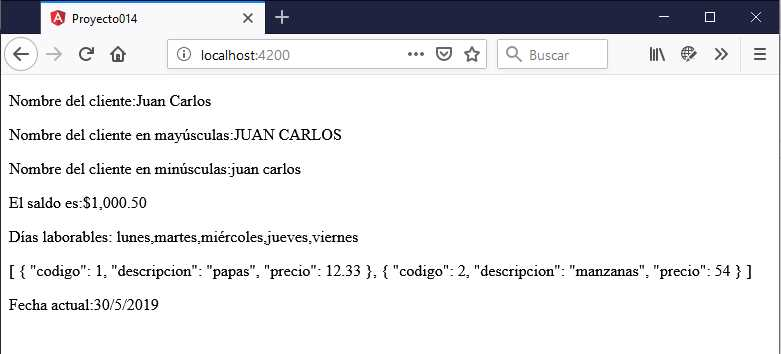

Las pipes también llamadas tuberías o filtros son funciones que se llaman en una vista (html) y que tienen por objetivo transformar un dato a mostrar para mejorar la experiencia del usuario.
Hay una cantidad reducida de pipes que trae por defecto Angular y podemos hacer uso en cualquier vistas de nuestras componentes. Lo más importante es que podemos crear nuestras propias pipes, lo veremos en el próximo concepto.
La llamada a estas funciones tiene una sintaxis muy distinta a la tradicional y su objetivo es hacer más claro la sintaxis de nuestra vista.
Por ejemplo para mostrar el contenido de una variable toda en mayúsculas en la plantilla utilizamos la siguiente sintaxis:
<p>Nombre del cliente:{{ nombre | uppercase}}</p>
Considerando que en la componente hemos definido la propiedad:
nombre = 'Juan Carlos';
La salida en el navegador será:
Nombre del cliente:JUAN CARLOS
Como vemos en la interpolación de la propiedad 'nombre' llamamos a la pipe después del caracter '|'.
La pipe 'uppercase' transforma a mayúsculas el dato que se muestra en la página, no se modifica la propiedad 'nombre'.
En algunas pipes podemos pasar parámetros:
<p>El saldo es:{{ saldo | currency:'$'}}</p>
Seguido al nombre de la pipe disponemos cada parámetro antecedido por el caracter ':'.
Podemos aplicar una pipe directamente a un valor indicado en la vista:
<p>{{ 'Hola' | uppercase }}</p>
Como se trata de un string debemos indicarlo entre comillas. Luego cuando ejecutamos en el navegador tenemos como resultado 'HOLA'.
Confeccionar una aplicación que defina una serie de propiedades y muestre sus valores aplicando distintas pipes que trae por defecto Angular.
Desde la línea de comandos de Node.js procedemos a crear el proyecto014:
f:\angularya> ng new proyecto014
Definimos ahora en la componente 'AppComponent' una serie de propiedades:
import { Component } from '@angular/core';
@Component({
selector: 'app-root',
templateUrl: './app.component.html',
styleUrls: ['./app.component.css']
})
export class AppComponent {
nombre = 'Juan Carlos';
saldo = 1000.50;
dias = ['domingo','lunes','martes','miércoles','jueves','viernes','sábado'];
articulos = [{
codigo: 1,
descripcion: "papas",
precio: 12.33
},{
codigo: 2,
descripcion: "manzanas",
precio: 54
}];
fechaActual = new Date();
}
Hemos definido 5 propiedades de distintos tipos: string, number, vector con los días, vector de artículos con objetos y un objeto de tipo Date.
El archivo de la vista 'app.component.html' queda con la siguiente sintaxis:
<p>Nombre del cliente:{{ nombre }}</p>
<p>Nombre del cliente en mayúsculas:{{ nombre | uppercase }}</p>
<p>Nombre del cliente en minúsculas:{{ nombre | lowercase }}</p>
<p>El saldo es:{{ saldo | currency:'$'}}</p>
<p>Días laborables: {{ dias | slice:1:6}}</p>
<p>{{ articulos | json }}</p>
<p>Fecha actual:{{ fechaActual | date:'d/M/y' }}</p>
Ya vimos las pipes: uppercase y lowercase:
<p>Nombre del cliente en mayúsculas:{{ nombre | uppercase }}</p>
<p>Nombre del cliente en minúsculas:{{ nombre | lowercase }}</p>
Para mostrar un importe monetario podemos utilizar la pipe 'currency':
<p>El saldo es:{{ saldo | currency:'$'}}</p>
Si necesitamos mostrar parte de un vector podemos utilizar la pipe 'slice' e indicar en dos parámetros a partir de que índice recuperar los datos y hasta que índice:
<p>Días laborables: {{ dias | slice:1:6}}</p>
Otra pipe útil cuando tenemos que depurar programas es la impresión del contenido de una variable que almacena datos en formato JSON:
<p>{{ articulos | json }}</p>
Finalmente utilizamos la pipe 'date':
<p>Fecha actual:{{ fechaActual | date:'d/M/y' }}</p>
Para ver el resultado en el navegador ejecutamos la aplicación:
f:\angularya\proyecto014> ng serve -o
Y tenemos como resultado en el navegador:
Podemos probar esta aplicación en la web aquí.